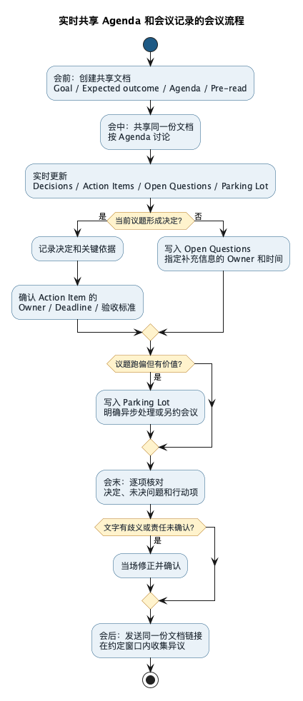

开会的艺术之一：在开会时实时分享 Agenda 和会议记录
Posted on 二 28 7月 2026 in Journal
| Abstract | 开会的艺术之一：在开会时实时分享 Agenda 和会议记录 |
|---|---|
| Authors | Walter Fan |
| Category | 职场方法论 |
| Version | v1.0 |
| Updated | 2026-07-28 |
| License | CC-BY-NC-ND 4.0 |
开会的艺术之一：在开会时实时分享 Agenda 和会议记录
会议结束前，主持人问：“大家还有问题吗？”没人说话，会议顺利结束。
半小时后，群里却冒出三个版本的理解：产品以为周五上线，开发以为周五提测，测试以为还在等需求确认。大家明明参加的是同一场会，带走的却不是同一个结论。
我开会时有一个越来越固定的习惯：共享屏幕上长期放着的，不一定是 PPT，而是正在更新的 Agenda（议程）和会议记录。讨论到哪里、决定了什么、下一步谁来做，都直接写在所有人眼前。这样做不只是为了得到一份纪要，更重要的是让共识在会上形成，让责任当场落地。
Agenda 不是开场白，会议记录也不是会后作业
很多会议也有 Agenda，只是命运比较坎坷。
会议邀请里写了三行议程，开场时读一遍，然后它就完成了历史使命。讨论跑到哪里算哪里。至于会议记录，通常由某个人埋头记在自己的电脑里，会后再花半小时整理，第二天发出一个“最终版”。
问题是，私人笔记只能记录分歧，不能及时消除分歧。
你把一句话记错了，别人看不见；两个部门对结论理解不同，也要等会后才发现。等“最终版”发出来，有人会说“我当时不是这个意思”，有人会说“这件事我没答应过”。会议已经散了，只能在聊天窗口里加赛，有时还得再开一场会解释上一场会。
所以我更愿意把 Agenda 和记录放在同一份共享文档里。会前它是路线图，会中它是工作台，会后它自然变成纪要。
会议记录最有价值的时刻，不是会后发出去时，而是会上大家一起盯着它、修改它、确认它时。
实时共享，解决的是三个问题
表面上看，这只是把一个文档共享出来。往深一点看，它改变了会议里三件很重要的事。
1. 把“我以为”变成看得见的共识
口头沟通有个天然毛病：每个人都会用自己的背景去补全没有说清楚的部分。
有人说“尽快上线”，产品脑中是本周，开发脑中是这个月；有人说“先做一个简单版本”，设计师理解为减少两个页面，工程师理解为先不做权限控制。大家都觉得自己听懂了，其实听懂的是各自的版本。
实时记录相当于给会议加了一块公共白板。主持人可以直接问：
“我先把结论写成‘本周五完成开发，下周一开始测试’，大家看这句话有没有歧义？”
一旦文字出现在屏幕上，模糊的地方就藏不住了。共识不是“没人反对”，而是大家对同一句话做出了确认。
2. 把“我们回头处理”变成责任到人
会议里最轻松的一句话是：“这个我们会后跟一下。”
“我们”通常是一个很有礼貌的无人区。散会以后，所有人都默认另一个人会跟。过了几天再问，大家面面相觑，气氛像在认领一个来路不明的快递。
一条能执行的 Action Item（行动项），至少要有三样东西：
| 要素 | 要回答的问题 | 示例 |
|---|---|---|
| Owner | 谁对结果负责？ | Walter |
| Deadline | 什么时候完成？ | 7 月 31 日下班前 |
| 验收标准 | 怎样才算做完？ | 更新方案并得到安全负责人确认 |
Owner 不是记录人随手点的名字。写上去以后，主持人要当场问一句：“这个行动项由你负责，可以吗？”责任只有被本人明确接住，才不是会议纪要里的单方面愿望。
3. 用透明的过程积累团队信任
团队里的不信任，很多时候不是谁故意使坏，而是信息不对称：决定为什么改了，谁提过风险，当时答应的范围是什么，过两周已经没人说得准。
实时共享会把决定和依据留在同一个地方。例如：
Decision：本期采用方案 B。
Reason：方案 A 无法满足当前的权限要求；方案 C 会错过发布窗口。
这不是为了日后“查案”，而是让团队知道：决定不是拍脑袋，意见没有被偷偷删掉，承诺也不会随着记忆变化。信任不等于不用记录；好的记录恰恰能让大家少猜一点。
当然，透明不等于把每一句话都永久保存。会议记录应该保留决定、关键依据、未解决的分歧和行动项，而不是给每位参会者做一份庭审笔录。
一份文档，从会前用到会后
我比较喜欢简单的做法。不要为 Agenda 建一个文件，为会议记录再建一个文件，最后又复制成“纪要最终版”。文件一多，版本就开始打架。
会前：先写清楚这场会要产出什么
发会议邀请时，至少把下面几项放进共享文档：
- Goal：为什么要开这场会？
- Expected outcome：散会前要得到什么，是决定、方案、风险清单，还是任务分工？
- Agenda：讨论哪些议题，每项多少分钟？
- Pre-read：参会者需要提前读什么材料？
- Decision maker：出现分歧时，谁来拍板？
如果连预期产出都写不出来，这场会大概率还没准备好。先别急着占大家的日历。
会中：共享同一页，边讨论边更新
会议开始后，共享这份文档，按 Agenda 一项项推进。每完成一个议题，就更新四个区域：
- Decisions：已经确认的决定；
- Action Items：谁在什么时间前交付什么；
- Open Questions：还没有答案、需要补充信息的问题；
- Parking Lot：有价值但不属于本次议题的讨论，先放进“停车场”。
Parking Lot 不是垃圾桶。每放进去一项，都要说明会后怎么处理：异步讨论、另约专题会，还是明确不再跟进。否则只是把跑题换了一个好听的名字。
主持人如果既要控场又要打字，忙不过来也很正常。我做过两年文字秘书，多少练过一点速记，照样有顾不过来的时候。重要会议最好明确一位记录人；主持人负责节奏和确认，记录人负责把关键内容写出来。两个人配合，通常比主持人低头猛敲键盘靠谱。
会末：留五分钟，当场“验收”会议
别把会议排到最后一分钟还在讨论。预留五分钟，把文档从上到下过一遍：
- 今天到底做了哪些决定？
- 哪些问题还没有解决？
- 每个行动项的 Owner、Deadline 和验收标准是什么？
- Parking Lot 里的问题接下来怎么办？
这一遍不是形式主义，而是会议的验收环节。软件写完要测试，会议开完也得确认输出，不能只看大家聊得是否热闹。
会后：发链接，不要重新发明一个版本
会后尽快把同一份文档的链接发到群里，附上两三行摘要即可。不要再复制一份“正式纪要”，否则很快就会出现两个真相来源。
如果事情重要，可以约定一个明确的反馈窗口，例如：“如对决定或行动项有异议，请在明天下午五点前直接评论。”过了这个时间再改决定，应写清修改原因，而不是悄悄把原文覆盖掉。
这套流程画出来很简单，但关键不是把每个格子走完，而是让“没有结论”“没有 Owner”“文字有歧义”这些问题在散会前暴露出来。

几句很好用的主持话术
主持会议不等于嗓门最大。很多时候，只要把问题问具体，会议就能自己回到轨道上。
| 场景 | 可以这样说 |
|---|---|
| 开场对齐 | “今天要产出的不是更多想法，而是决定采用哪个方案。” |
| 确认共识 | “我把刚才的结论写在这里了，大家看文字是否准确。” |
| 区分意见与决定 | “这是一个建议，还是我们已经做出的决定？” |
| 落实责任 | “这项工作谁来 Owner？截止时间和完成标准是什么？” |
| 制止跑题 | “这个问题有价值，但不影响今天的决定，我先放到 Parking Lot。” |
| 暴露分歧 | “A 和 B 的理解不一样，我们先把分歧写成一句话，再决定怎么处理。” |
| 收尾确认 | “请大家再看一遍 Decisions 和 Action Items，有异议现在提。” |
这些话术有一个共同点：不评价谁说得对，而是把注意力拉回目标、文字和下一步。主持人不是裁判，也不是演讲者，更像交通警察：别让车堵在路口，先把该走的方向说明白。
可以直接复制的会议模板
下面这份模板不复杂。复杂的模板容易让人忙着填表，忘了开会。
# [会议名称]
## Goal
- 这场会要解决什么问题：
- Expected outcome：
- Decision maker：
- Participants：
## Agenda
| 时间 | 议题 | 主持人 | 预期产出 | 状态 |
|---|---|---|---|---|
| 0-5 min | 背景与目标 | Alice | 确认范围 | Done |
| 5-20 min | 方案比较 | Bob | 选出方案 | In progress |
| 20-25 min | 风险与依赖 | Carol | 风险清单 | Todo |
| 25-30 min | 行动确认 | Alice | Owner + Deadline | Todo |
## Decisions
| # | 决定 | 关键依据 | 确认人 |
|---|---|---|---|
| D1 | | | |
## Action Items
| # | 行动 | Owner | Deadline | 验收标准 | 状态 |
|---|---|---|---|---|---|
| A1 | | | | | Todo |
## Open Questions
- [ ] 问题 / Owner / 预计答复时间
## Parking Lot
- 议题 / 后续处理方式 / Owner
## Key Notes
- 只记录影响决定的事实、约束和分歧，不做逐字转录。
工具不重要。飞书文档、Google Docs、Zoom Docs、Confluence，甚至一个能共享的 Markdown 页面都可以。关键是所有人看到同一份内容，而且会议结束后还能找到它。
这几个坑，比没有模板更麻烦
记录成流水账
谁说了第一句、谁补充了第二句，写得满满当当，却找不到决定和行动项。这类纪要很勤奋，也很难用。记录时优先抓四样：决定、依据、分歧、行动。
文档在共享，脑子没共享
主持人一直打字，却不暂停确认。屏幕上虽然有字，其他人只是把它当字幕看。实时共享的关键动作不是“写”，而是不断问：“这样写准确吗？”
AI 记得很全，没人确认
AI 可以转录和整理初稿，但它不知道一句话是随口建议、暂时假设，还是正式决定。涉及责任和承诺的内容，仍然要由参会者当场确认。AI 可以当记录员，不能替团队形成共识。
什么都记，什么人都能看
客户信息、人事讨论、安全事件和未公开的商业计划，不适合默认向所有人开放。开会前要确认文档权限；记录时只保留完成工作所必需的信息；会后再检查分享范围。透明是对该知道的人透明，不是把会议室拆成玻璃房。
缺了真正能做决定的人
实时共享能减少误解，却不能代替决策权。如果拍板的人不在场，会议最多形成建议，不能假装已经形成决定。文档里应老老实实写成 Proposed，并标明谁在什么时候确认。
下次开会前，检查这十件事
- [ ] 这件事真的需要开会，而不是发一条消息或写一份文档？
- [ ] Goal 和 Expected outcome 是否写清楚？
- [ ] Agenda 是否有时间限制？
- [ ] 需要拍板的人是否参会？
- [ ] 共享文档是否提前创建并设置好权限？
- [ ] 会中是否持续更新 Decisions、Action Items 和 Open Questions？
- [ ] 每个行动项是否有 Owner、Deadline 和验收标准？
- [ ] Owner 是否亲口确认接下任务？
- [ ] 会议结束前是否预留五分钟核对记录？
- [ ] 敏感信息是否只对必要的人开放？
我以前做文字秘书时，会议记录常常是一项会后任务：会开完了，再回去整理，再逐级确认。现在有了协作文档和在线会议工具，我们没必要继续沿用“先说一遍、再猜一遍、最后改一遍”的老办法。
把 Agenda 和会议记录放到所有人眼前，看起来只是一个小动作，背后却是一套朴素的协作原则：共识要看得见，责任要有人接，决定要经得起回看。
下一场会，不妨先少放几页 PPT，多共享十分钟会议文档。看看散会时，大家带走的是不是终于成了同一个版本。
你所在的团队会在会议中实时共享记录吗？最容易卡在哪一步？
本作品采用知识共享署名-非商业性使用-禁止演绎 4.0 国际许可协议进行许可。欢迎在我的个人网站 https://www.fanyamin.com 访问原文并评论。